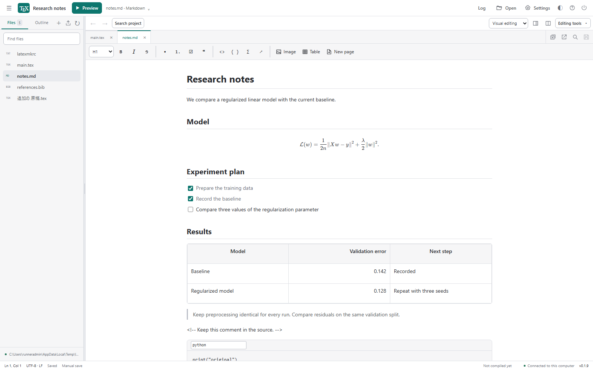

Local TeX Web Editor
Write TeX and edit Markdown directly in your browser. Compile with TeX Live on your computer and read the PDF alongside your manuscript.
Launching the app opens a localhost page. Documents stay in the project folder on your computer.

New in v0.1.9
Edit rendered Markdown, choose when to show the preview, and manage your projects from Home.
- Edit Markdown directly. Documents open in Visual editing. Edit text, table cells, tasks, code, and equations, or switch to Source for the Markdown notation.
- Show or hide the preview. Give the editor more room and reopen the preview at its previous width. The app remembers your choice for each editing mode.
- Keep PDF navigation visible. Back, Forward, the page number, zoom buttons, and Save PDF stay on the toolbar. The … menu identifies the PDF and the TeX document used to compile it.
- Read citation titles in the PDF. Hover over a citation link or focus it with Tab to see the title, author, and year from the project's bibliography.
- Choose your colors and font. Select from seven color schemes, eight accent colors, and ten editor fonts, or set custom colors for light and dark modes.
- Manage projects from Home. The TeX logo opens the current and recent project cards. Delete a project after reviewing its files and drafts and entering its exact folder name.
- Add files from your computer. Select multiple files and copy them into a project folder. For an existing name, choose replacement, a different name, or skipping.
- Delete a folder with its contents. Review the files and unsaved documents in the confirmation screen before deleting the folder.
- Select and manage edit history. Restore several changes together, or select unwanted versions and review them before deletion. Both lists support select-all and Shift-click.
The Markdown toolbar also has labelled Image, Table, and New page buttons. See the v0.1.9 release notes for the complete changes.
Requirements and app size
Use a current version of Chrome or Edge. For TeX compilation, install TeX Live separately with the programs and packages your documents need. If your project already compiles in another editor, choose that same TeX installation. Markdown editing and preview work without TeX Live.
| Platform | Operating system | Example TeX folder |
|---|---|---|
| Windows | Windows 10 / 11, x64 | C:\texlive\2025\bin\windows |
| macOS | macOS 12 or later, Apple Silicon or Intel | /Library/TeX/texbin |
The Microsoft Store edition requires Windows 10 version 2004 (build 19041) or later, or Windows 11, on an x64 PC.
The app uses latexmk to compile and synctex to move between source and PDF. If your project uses a latexmkrc or .latexmkrc file, keep it with the source files.
| v0.1.9 | ZIP download | App after extraction |
|---|---|---|
| Windows x64 | About 8 MB | About 18 MB |
| macOS, both CPUs | About 16 MB | About 35 MB |
Sizes are rounded to the nearest MB; see the v0.1.9 release assets for each download's size. 1 MB = 1,000,000 bytes. TeX Live, documents, drafts, edit history, templates and compilation files use additional space. The app includes its editor and PDF viewer; it runs without installing Python, Node.js, Go or VS Code.
Starting with a smaller TeX installation
On Windows, the TeX Live installer lets you choose a smaller installation scheme. On Mac, BasicTeX provides a small starting point. Add latexmk, synctex and packages needed by your documents.
In the app, Settings → Add TeX packages prepares commands for adding packages or finding a package from a missing file name. See the TeX installation guide in the README.
Get started
-
Install or download the app, then open it
Windows (Microsoft Store): install the app from Microsoft Store, then open Local TeX Web Editor from the Start menu.
Windows (ZIP): extract the ZIP and double-click
local-tex-web-editor.exe.Mac: extract the ZIP, move
Local TeX Web Editor.appto Applications, then open it from Finder or Spotlight.The editor opens in your default browser. TeX Live is installed separately for TeX compilation.
-
Open your project folder
Choose the folder containing your
.texand.bibfiles, images and project settings. To use an Overleaf project, download its source ZIP and extract it first.For a new project, choose Create from a template on Home, select a template, and choose a parent folder and a new folder name.
If TeX Live is not found automatically, select its program folder in Settings.
-
Open a TeX document and compile
Select the document in the file list and click Compile, or press Ctrl + Enter on Windows or Cmd + Enter on Mac. The resulting PDF appears on the right.
The interface starts in English. Open Settings → Language / 言語設定 and select 日本語 to see it change immediately. Choose Save to use that language next time, or Cancel to return to the saved language. The language label always appears in both languages.
If Windows or macOS blocks an app downloaded as a ZIP
For the Windows ZIP edition and SmartScreen, see the Windows launch instructions and Microsoft's guidance.
On Mac, see the macOS launch instructions and Apple's guide to opening an app.
The Microsoft Store installation adds the app to the Windows Start menu. In the Windows ZIP edition, the app's Settings can create Start menu or desktop shortcuts. On Mac, open the app from Applications or Spotlight.
Manage projects from Home
Click the TeX logo to open Home. Cards show the current and recent projects with their full folder paths. Return to editing resumes the same workspace, including unsaved text, open tabs, and cursor positions.
Choose Delete… on a project card to review its files, folders, hidden items, and saved drafts. Check the acknowledgment and enter the exact folder name, then choose Delete project to delete the folder and its contents from your computer.
If files or drafts change after the review, the app asks you to review the updated list. Deletion also removes the project's recent entry, saved drafts, editing session, and saved PDF previews.
Return to the editor and finish a session
The local app keeps running when its browser tab sleeps, is discarded, or closes. Returning to the tab reconnects to the same local address. Launching the same version again opens the existing editor.
To finish, choose Quit in the app and follow the save prompt. This stops the local app and its background work.
Editing and preview
Files open in tabs. When the preview is showing a PDF, compiling an independent TeX document switches it to that document's PDF. Switching between TeX tabs alone leaves the last compiled PDF visible. For a chapter included by another file, use the default main document or a % !TeX root = ../main.tex comment.
Use a mouse wheel, a horizontal trackpad gesture, or touch to move through a long tab strip. Close all tabs above the editor clears the strip and offers Save, Discard, or Cancel for unsaved edits. The next session restores your chosen tabs and order, including a strip with no open tabs.
Outline shows the headings from the selected TeX or Markdown tab and updates when you switch tabs. Vertical guides show the hierarchy; the arrows expand or collapse child headings. Click a heading to open its source line with space above it. Folded source content opens at the destination.
Drag the right edge of the files and outline sidebar, the divider between the editor and preview, or the top edge of the log to adjust the space you use. You can also focus a divider and use the arrow keys, or double-click it to restore its default position. Your chosen widths and log height are saved for the next launch.
Show preview / Hide preview opens or closes the preview. Closing it gives the editor the available width; reopening it restores the previous divider position. The preview starts closed for visual Markdown editing and open for Markdown source and TeX. Manual changes are remembered for each mode.
In Settings → Appearance, choose system, light, or dark mode, then select from seven color schemes, eight accent colors, and ten editor fonts. Gray and Consolas appear first and are marked as the defaults. For a black background, choose Dark mode and the Black color scheme. System mode follows your computer's light/dark preference; another monospace font is used when the chosen font is unavailable.
Set the background, text, and accent colors with a color picker or hexadecimal code. Light and dark modes save their colors independently. Clear a code, or choose Use the color scheme for this mode, to return to the selected scheme. Changes appear immediately: choose Save appearance to use them next time, or Cancel to return to the previous appearance.
Manage files and edit code
Right-click a file, a folder, or an empty area in the file list to create a file or folder at that location. The menu also offers copying paths, renaming, and Delete…. From the keyboard, focus the entry and press Shift + F10 or the context-menu key. Use F2 to rename and Delete to open the deletion confirmation. For a folder, review its contents and unsaved documents before deleting the folder and its contents.
Choose Add files from your computer… from the toolbar beside ＋ or from the context menu. Select one or more files, choose the destination project folder, and review any existing names: replace the file, add it under another name, or skip it. Files are copied from their original locations, with a limit of 128 MiB per file. Before replacing a file that has an open tab or saved drafts, close the tab or review those drafts. The new-file dialog also accepts a project-relative path.
Renaming updates the open tabs and their unsaved text. After a rename, update any links to that path in your documents.
Python, JavaScript/TypeScript, C/C++, Java, Kotlin, C#, Go, Rust, R, Ruby, shell, PowerShell, HTML, CSS, XML, SQL, JSON, YAML, TOML, and Lua files have syntax highlighting. Other supported text files open as plain text; notebooks with the .ipynb extension open as JSON. Use the same saving, search, drafts, and history tools while editing these files.
Complete TeX and fold sections
Type \b and accept \begin, then type i inside its braces to choose an itemize block. Completion inserts the item and its matching ending. Press Enter to accept a candidate and Tab / Shift + Tab to move between inserted fields. Citation keys and labels also appear in the list; read the title, authors and file location beside or below it.
In Settings, use Enable TeX completion and Show suggestions while typing to choose when suggestions appear. With automatic suggestions off, Ctrl + Space still opens the list.
Click an arrow beside the line numbers to fold a section or environment. Markdown headings and code blocks can also be folded in Source mode. Use Ctrl + Shift + [ / ] on Windows, or Cmd + Alt + [ / ] on Mac, to fold or unfold at the cursor.
Read the PDF and move to the source
Scroll continuously through pages, select PDF text and search. The ＋ / − buttons and zoom selector use the PDF position at the center of the preview; Ctrl + wheel and pinch zoom around the pointer or gesture position. SyncTeX connects the PDF to the source used to compile it.
- PDF → source
- Double-click text in the PDF to open its corresponding source line.
- Source → PDF
- Ctrl + click a source line on Windows, or Cmd + click on Mac.
- Source text size
- Use Ctrl + wheel over the editor, pinch, or change the font size in Settings.
Use the ← / → buttons above the editor or preview to go back and forward through visited locations. After following a citation or section link within the PDF, ← returns to the page and position you were reading.
The toolbar stays on one row. Back, Forward, ＋, −, Save PDF, and the page-number field stay visible at every preview width. The … (PDF actions) menu is always available and shows the PDF's file name and, for a compiled preview, the project-relative path of its TeX document and its update status. As the preview narrows, the zoom selector, dark view, search, preview type, and previous/next page buttons move into that menu.
Hover over a PDF citation link, or focus it with Tab, to read the title, author, and year from the project's .bib files. Hyperref, natbib, and biblatex citation links work in the compiled preview and in PDF files opened from the file list. Click the link to follow the citation, or press Esc to close its details.
Choose Dark PDF view to change the PDF colors on screen, including figures and photographs. Saved PDFs use their original colors.
Edit Markdown directly or work in its source
Opening a .md or .markdown file starts in Visual editing. Edit rendered headings, paragraphs, lists, table cells, and code; tick task checkboxes; or select an equation to edit its TeX. The result is saved as Markdown.
Choose Visual editing / Source above the document to switch to the Markdown notation. Both modes share saving, autosave, drafts, and Undo. Switching modes leaves the text unchanged; visual edits rewrite the affected blocks and keep the original Markdown of the other blocks. Each pane remembers its mode, so the same document can be shown visually and as source side by side.
Use the formatting toolbar in either mode for headings, bold, italics, strikethrough, lists, quotes, inline code, links, and code blocks. The labelled Image, Table, and New page buttons open their dialogs directly. Visual editing also lets you insert equations and add or remove table rows and columns.
Open Show preview when you want another view beside the document. Set it to PDF to read the compiled paper while editing notes, Markdown to keep your notes visible, or Auto to follow the file being edited. In visual editing, use Ctrl + click on Windows or Cmd + click on Mac to follow a link.
In Source mode, use that same click shortcut, or the navigation button above the editor, to move to the corresponding preview passage. Double-click a paragraph or heading in the preview to return to its source line. Sync scrolling in the Markdown preview toolbar links scrolling in both directions; it starts enabled and saves your choice for future sessions.
Choose New page or Editing tools → New Markdown page to add another page. Enter its title and a path in an existing project folder, review the relative link, and choose whether to open the new page. The file starts with its title as a heading, and the link replaces the current selection. Undo in the original document removes the inserted link; the new page remains in the project.


Save Markdown as PDF and extract PDF text
Open Editing tools → Save Markdown as PDF to review the current Markdown, including unsaved edits, mathematics, tables, and project images. Choose Print / Save as PDF, then select the browser's PDF destination. Markdown export works without TeX Live.
To extract text, display a compiled PDF or open a PDF from the file list, then choose Editing tools → Convert PDF to text. Review the text and choose Download TXT. Progress is shown while reading the pages, and you can cancel the operation. The preview shows the first 20,000 characters; the download contains all extracted text, up to 16 MiB.
Text follows the PDF's page order. Scanned images require OCR. Columns, equations, and font mappings in the PDF can affect the resulting text and its order.
Search accepts pasted text across multiple lines. Autosave, local drafts, light and dark themes, and a saved place in each document support everyday editing. See the editing guide for shortcuts and details.
Search, compare and reuse
Use Search project above the editor, or open Editing tools for references, history, images, tables, templates, Markdown pages, and document export.
Search the whole project and follow references
Search project searches the text in project files, including unsaved edits in open tabs. Use Ctrl + Shift + F on Windows or Cmd + Shift + F on Mac. Review the before-and-after text, select the matches to replace, and apply the changes. Selecting a result opens its source location.
Editing tools → References and citations lists citation keys and labels with their definitions and uses. Search by key, title or author, jump to a location, or enter a new key and preview its changes before saving. The tool handles standard TeX citation and reference commands.
Keep two documents open and revisit earlier drafts
Choose Open two source editors above the tabs, then select a document for each pane. The panes have their own cursor, scroll position, and Markdown editing mode; edits to the same document appear in both. Drag the divider to adjust their widths. Drag tabs to reorder them. Open tabs, their order and the editor layout are restored when you reopen the project.
Editing tools → Document history compares an earlier version with the current text. Select several passages and restore them together; the resulting edit supports Undo. You can also name and record the current text before a larger revision. Select unwanted versions and review their names and dates before deleting them. Both lists show the selection count and support select-all and Shift-click.
History is compressed and stored on your computer. The default limits are 30 days and 50 MiB in total, with up to 50 versions per file. Automatic records are at least a minute apart, and documents over 2 MiB are excluded. Change the days and capacity, or stop new records, under History settings.
Insert images and tables
Paste or drop an image into the editor, or choose Editing tools → Insert an image. Check its destination and caption before importing. PNG, JPEG and PDF files up to 8 MiB are supported. An existing filename gets a new numbered name, and the inserted TeX or Markdown uses a path relative to the source document. TeX figures also have label and width fields.
Insert a table accepts tab- or comma-delimited text copied from a spreadsheet, including quoted cells and line breaks. You can instead choose the row and column counts to create a new table. Edit the preview cells and choose TeX or Markdown before inserting the source.
Start from a template you can customize
Choose Create from a template on Home or Editing tools → Manage templates in a project. The built-in choices are a Japanese LuaLaTeX document, an English article, Beamer slides and Markdown notes. A new project is created in a new folder.
To reuse your own setup, open its project, choose the source files and images to include, and save it as a template. Templates have editable names and descriptions, and can be deleted when you no longer need them. Generated PDFs, compilation files and edit history are omitted. You can register up to 20 templates, each with up to 200 files and 32 MiB of content.
Read compilation errors and warnings by type
Open the log to filter errors, unresolved references, citations, overfull or underfull boxes, and other warnings. When a source location is available, select it to open the corresponding line. The complete log remains available below the list.
Updates and help
Click the app's ? (Help) button or press F1 for the user guide, keyboard shortcuts, release notes, and troubleshooting steps. Help also opens the compilation log, Settings, and the update page for your edition.
Use Microsoft Store to update the Windows Store edition. New versions become available after Store review and publication. Launch the updated app from the Start menu.
For the Windows ZIP edition and macOS, download updates from GitHub Releases. On Windows, extract the new ZIP and run its .exe; follow the prompt if an older version is running. On Mac, save your work, quit the app and replace the copy in Applications.
App updates use the same settings and drafts for each edition. The first Store launch copies valid settings and drafts from an existing Windows ZIP installation. Your documents stay in their project folders.
Use the app's Quit action to finish a session. Closing browser tabs leaves the local app running so you can reopen the editor later.
For a problem or suggestion, choose Open GitHub Issues in Help. Under About the app, use Copy environment information to copy the app version, operating system, architecture, edition, and available TeX programs. Include the steps to reproduce a problem; a short log excerpt or a small sample project can help explain a compilation problem.